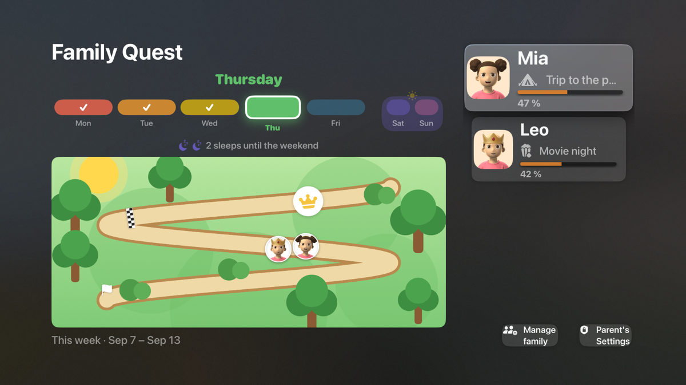

English · Français
A chore chart works only where it is seen, and a parent's phone is the one place a small child never looks. FamilyQuest puts the week on the screen the family already gathers around.

One screen for the whole family: a shared map with every child's avatar somewhere along the path, and a card per child with today's goals. When a goal is ticked — on a phone, or with the remote if you allow it — the avatar moves. At the finish line is the reward the child chose; a little further on, a crown for a great week. Sunday night, the television plays the week's recap.
No phone needed. Start a family on the TV, and it walks you through it in about a minute: the child's name and age, a reward for the week, goals that suit the age already ticked, and an avatar to shuffle until it looks right. A phone or a second parent joins later with a six-digit code.
Apple TV (tvOS 17 or later) and Fire TV — the same family, live, on both. Phones and tablets: iPhone, iPad and Fire tablet, with Android on Google Play in testing. English and Canadian French.
Free. No ads, no subscription, no in-app purchases.
See every screen → or the free printable chart for the fridge
FamilyQuest runs on both, free. The television shows every child’s progress on one screen and, if the parents allow it, goals can be checked off with the remote. It syncs live with the phone and tablet apps.
Because a chart works only where it is seen. A parent’s phone is the one place a four-year-old never looks; a paper chart on the fridge works because it is in the room. The television is in the room too, and it is already switched on.
No. A family can be created and set up entirely on the television: name, age, the reward, a starter set of goals for that age, and an avatar — about a minute with the remote. A phone can join later with a code.
No. Free on every platform, no ads, no subscription, no in-app purchases.